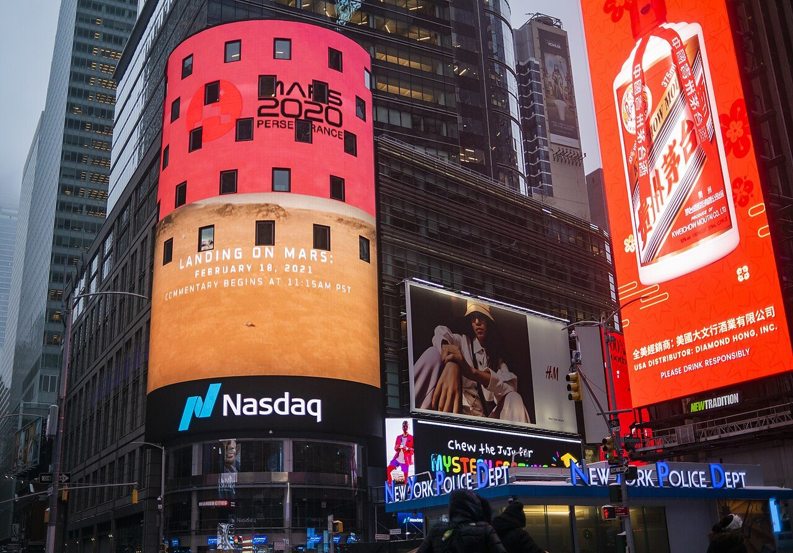
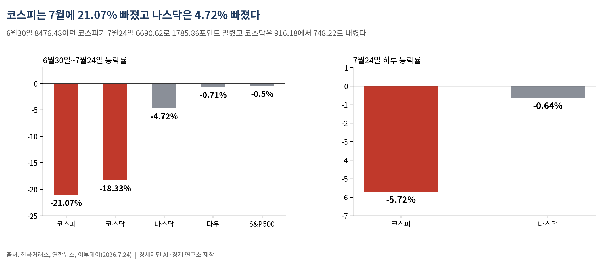
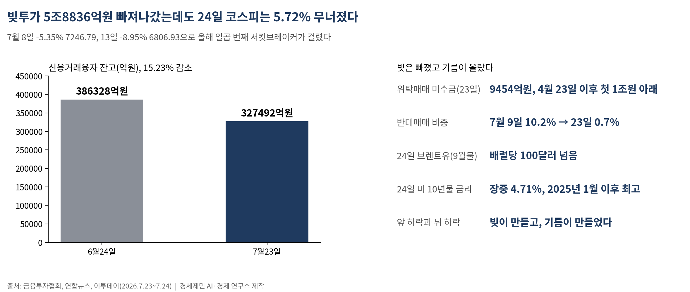
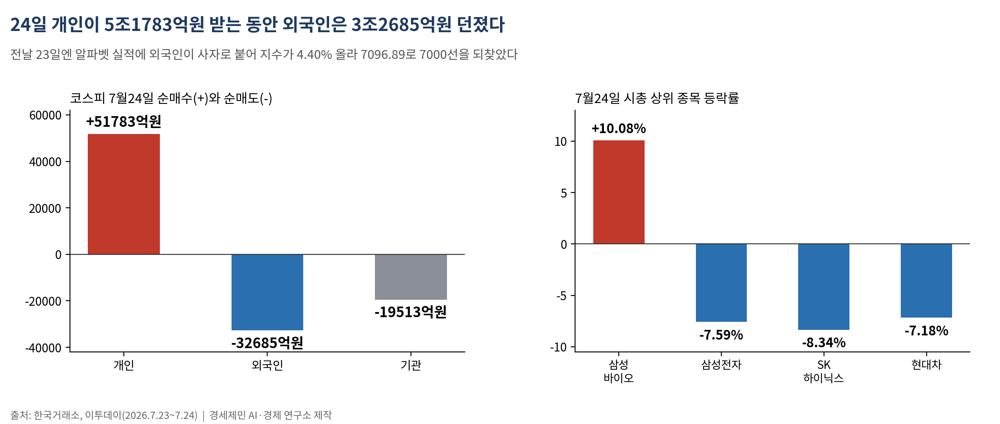
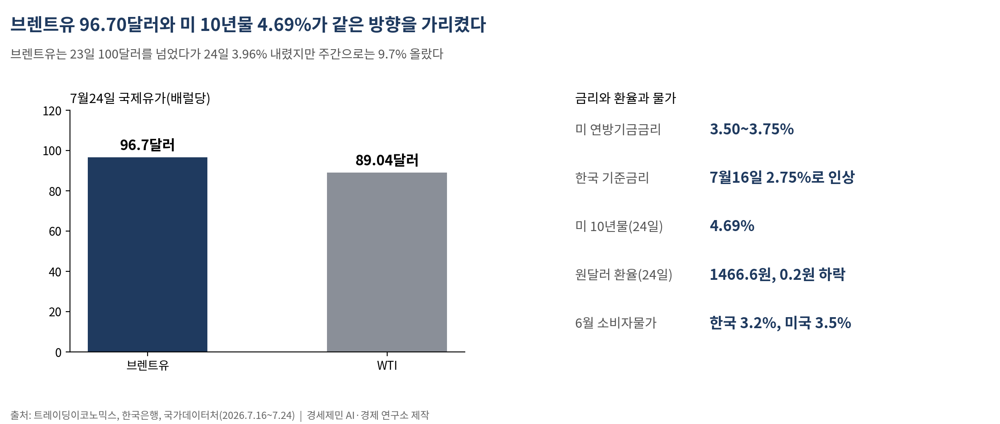
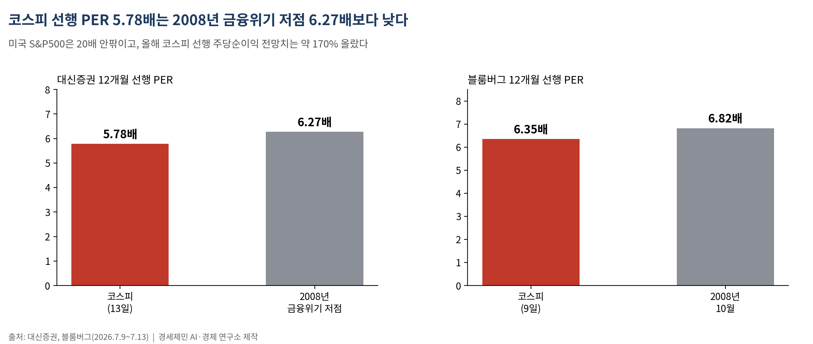

코스피 7월에 21.07% 빠졌다, 나스닥은 4.72% 빠졌다
6월 30일 8476.48이던 지수가 7월 24일 6690.62로 밀렸고, 코스닥은 18.33% 내렸다
빚투는 6월 24일 38조6328억원에서 7월 23일 32조7492억원으로 5조8836억원 빠져나갔다
빚을 털어내고도 24일 다시 5.72% 무너졌다, 8월은 레버리지가 아니라 유가와 금리가 가른다
AI경세제민=김갑봉 기자 | (데이터 기준시점: 2026년 7월 24일 종가 / 마지막 데이터 학습 완료일 2026년 7월 21일, 이후 웹검색 검증)

코스피가 7월 한 달 동안 21.07% 빠졌다. 6월 30일 8476.48에서 7월 24일 6690.62로 1785.86포인트 밀렸다. 코스닥은 916.18에서 748.22로 18.33% 내렸다.
같은 기간 미국 나스닥종합지수는 4.72% 빠지는 데 그쳤다. 스탠더드앤드푸어스(S&P)500지수는 0.50%, 다우존스산업평균지수는 0.71% 내렸다. 같은 인공지능(AI) 조정을 겪었는데 한국만 네 배에서 마흔 배까지 더 빠졌다.
더 눈여겨볼 대목은 하락의 원인이 한 달 안에서 바뀌었다는 사실이다. 개인이 증권사에서 빌린 돈은 한 달 새 5조8836억원 줄었다. 빚을 털어내고도 지수는 24일 다시 5.72% 무너졌다.
같은 조정에 한국만 네 배 넘게 빠졌다

낙폭 차이는 실적 차이로 설명되지 않는다. 7월 24일 하루만 봐도 나스닥은 0.64% 내렸는데 코스피는 5.72% 빠졌다. 미국 시장이 같은 악재에서 받은 충격은 그만큼 얕았다.
주간으로 봐도 마찬가지다. 20일부터 24일까지 다우지수는 0.38%, S&P500은 0.61%, 나스닥은 2.13% 내렸다. 코스피는 같은 닷새 동안 20일 4.46% 빠졌다가 23일 4.40% 올랐고 24일 다시 5.72% 빠졌다.
아시아도 24일 함께 밀렸다. 상하이종합지수는 1.61% 내린 3814.20, 홍콩 항셍지수는 0.98% 내린 24963.23으로 마쳤다. 중국 A주 세 시장의 하루 거래대금은 1조9400억위안으로 4월 7일 이후 처음 2조위안을 밑돌았다.
그래도 지수를 밀어낸 힘의 종류는 달랐다. 미국과 중국은 유가와 금리를 소화했고, 한국은 그 위에 담보가 걸린 돈까지 얹고 있었다.
앞의 하락은 빚이, 뒤의 하락은 기름이 만들었다

7월 앞머리 하락은 빚이 만들었다. 코스피는 6일 8000선 위에서 마쳤다가 8일 5.35% 빠진 7246.79로 밀렸다. 13일에는 8.95% 빠진 6806.93으로 마감하며 올해 일곱 번째 서킷브레이커를 불렀다.
그 빚은 실제로 빠져나갔다. 금융투자협회에 따르면 신용거래융자 잔고는 6월 24일 38조6328억원으로 사상 최대를 찍은 뒤 7월 23일 32조7492억원으로 줄었다. 한 달 새 5조8836억원, 15.23%가 사라졌다. 신용거래융자는 투자자가 증권사에서 돈을 빌려 주식을 산 규모를 말한다.
강제 매도도 잦아들었다. 위탁매매 미수금은 23일 9454억원으로, 4월 23일 이후 처음 1조원 아래로 내려왔다. 미수금을 갚지 못하면 증권사가 주인 동의 없이 주식을 판다. 이 반대매매의 비중은 7월 9일 10.2%에서 23일 0.7%로 열넷의 하나가 됐다.
그런데도 24일 지수는 5.72% 빠졌다. 도널드 트럼프 미 대통령이 이란 대규모 공격을 검토한다고 밝히자 9월 인도분 브렌트유가 배럴당 100달러를 넘었다. 미국 10년물 국채금리는 장중 4.71%로 2025년 1월 이후 최고를 찍었다. 앞의 하락은 팔 물량이 마르면 멎지만, 뒤의 하락은 유가와 금리가 내려야 멎는다.
개인이 5조를 받는 동안 외국인은 3조를 던졌다

24일 수급표는 손을 갈랐다. 한국거래소 집계를 보면 개인은 코스피에서 5조1783억원을 순매수했다. 외국인은 5거래일 만에 순매도로 돌아서 3조2685억원을 팔았고, 기관도 1조9513억원을 덜어냈다.
전날인 23일은 정반대였다. 알파벳(구글 모회사) 실적이 좋게 나오자 외국인이 사자로 붙었고, 지수는 4.40% 오른 7096.89로 7000선을 되찾았다. 외국인은 오른 자리에서 사고 내린 자리에서 팔았다. 개인은 오른 자리에서 팔고 내린 자리에서 받았다.
갈림은 지수 안에서도 났다. 24일 시가총액 상위 10개 종목 가운데 오른 것은 10.08% 뛴 삼성바이오로직스 하나뿐이었다. 삼성전자는 7.59% 내린 24만9500원, SK하이닉스는 8.34% 내린 175만9000원에 마쳤다. 현대차도 7.18% 내린 40만1000원에 마쳤고, 코스닥에서는 레인보우로보틱스가 17.62% 빠졌다.
값을 만든 것은 반도체 공장과 엔지니어이고, 값의 출렁임을 떠안은 것은 빚을 낸 개인이다. 상반기에 코스피가 101% 오르는 동안 코스닥은 945.57에서 916.18로 오히려 내렸다. 대형주를 든 쪽과 중소형주를 든 쪽의 한 해가 갈렸다.
거시 다섯 잣대가 한 방향을 가리켰다

금리부터 보자. 미국 연방기금금리는 3.50~3.75%다. 한국은행은 7월 16일 기준금리를 0.25%포인트 올려 2.75%로 했다. 3년 6개월 만의 인상이다.
채권금리가 뒤따랐다. 미국 10년물 국채금리는 24일 4.69%로 마쳤다. 일본 10년물도 일본은행 금융정책회의를 앞두고 2.81%대로 올라섰다.
유가가 그 위에 얹혔다. 브렌트유는 23일 100달러를 넘었다가 24일 3.96% 내린 96.70달러(약 14만2000원)에 거래됐다. 서부텍사스산 원유도 3.42% 내린 89.04달러(약 13만1000원)에 마쳤다. 그래도 브렌트유는 주간으로 9.7% 올랐다.
환율과 물가는 엇갈렸다. 원달러 환율은 24일 0.2원 내린 1466.6원으로 오히려 안정됐다. 국가데이터처가 집계한 한국 6월 소비자물가는 3.2%였다. 미 노동부가 발표한 미국 6월 소비자물가는 3.5%로, 둘 다 목표 2%를 웃돌았다.
실적은 오르는데 값은 금융위기보다 싸다

여기서 주가수익비율을 짚고 가자. 주가수익비율(PER·Price Earnings Ratio)은 주가를 1주당 순이익으로 나눈 값이다. 회사가 버는 돈에 견줘 주가가 비싼지 싼지를 재는 자다.
금리는 이 자를 직접 흔든다. 금리가 오르면 미래에 벌 돈을 오늘 값으로 되돌릴 때 나누는 수가 커진다. 같은 이익을 내는 회사라도 값이 깎인다는 뜻이다. 유가가 오르면 물가가 오르고, 물가가 오르면 금리가 오르고, 금리가 오르면 주가가 눌린다.
숫자로 보면 이렇다. 대신증권은 코스피의 12개월 선행 PER이 13일 기준 5.78배로 2008년 금융위기 저점 6.27배를 밑돌았다고 봤다. 블룸버그는 9일 기준 6.35배로 2008년 10월 6.82배보다 낮다고 집계했다. 미국 S&P500이 20배 안팎인 것과 견주면 3분의 1 수준이다.
이익이 줄어서 싸진 것이 아니다. 올해 들어 코스피의 12개월 선행 주당순이익 전망치는 약 170% 올랐다. 실적은 올라가는데 값은 내려갔다.
다음 주 사흘이 8월을 가른다
달력이 몰려 있다. 28~29일 미국 연방공개시장위원회(FOMC)가 열리고, 결정은 29일 오후 2시 현지시간에 나온다. 29일엔 SK하이닉스가, 30일 오전 10시엔 삼성전자가 2분기 실적을 내놓는다. 같은 30일 미국 6월 개인소비지출(PCE) 물가지수도 공개된다.
회의를 보는 눈이 지난달과 달라졌다. 채권시장은 이번 회의에서 금리를 올릴 확률을 3분의 1가량으로 매겼다. 케빈 워시 연준 의장은 7월 1일 포르투갈 신트라 회의에서 "물가가 너무 높다"고 했다.
기본 시나리오는 6500~7300 구간의 매물 소화다. 연준이 금리를 동결하고 두 반도체 회사가 메모리 값 반등을 실적으로 확인해 주면 반등 폭이 커진다. 반대로 연준이 인상 쪽으로 기울거나 브렌트유가 100달러 위에 눌러앉으면 6500선이 다시 시험대에 오른다.
7월은 아직 사흘 남았다. 빌린 돈 5조8836억원이 빠져나간 자리에서 지수가 다시 5.72% 밀렸다는 것이 이달이 남긴 숫자다.
참고문헌
· 한국거래소, 2026년 7월 24일 유가증권·코스닥시장 지수 및 투자자별 매매동향
· 금융투자협회, 신용거래융자 잔고·위탁매매 미수금·반대매매 현황(2026.7.23 기준)
· 국가데이터처, "2026년 6월 소비자물가동향", 2026.7.2., https://www.korea.kr/briefing/policyBriefingView.do?newsId=156769262
· 하영수, "증시 조정에 '빚투' 감소…신용융자 3개월 만에 최저·미수금 1조원 아래", CBC뉴스, 2026.7.25., https://www.cbci.co.kr/news/articleView.html?idxno=591805
· 박승희, "'중동 위기·고금리 압박'…외인 '투매' 코스피 6700선 아래로", 파이낸셜뉴스, 2026.7.24., https://www.fnnews.com/news/202607241628414445
· 김초희, "[오늘의증시] 6월 30일 코스피·코스닥", 뉴스1, 2026.6.30., https://www.news1.kr/photos/7984216
· "코스피, 기관 3조 순매수에 상반기 8476.48 마감…올해 101% 상승", 오피니언뉴스, 2026.6.30., http://www.opinionnews.co.kr/news/articleView.html?idxno=140845
· "출범 30주년 코스닥, 올해 코스피 96% 뛸 때 '제자리걸음'", 연합뉴스, 2026.7.1., https://v.daum.net/v/20260701155501522
· "코스피, 5% 급락 7,200선 밀려…코스닥, 10개월만에 800선 하회(종합)", 연합뉴스, 2026.7.8., https://v.daum.net/v/20260708162858774
· "코스피 8.95% 폭락 마감…올해 7번째 서킷브레이커", YTN, 2026.7.13., https://www.ytn.co.kr/_ln/0102_202607131647562547
· "[스팟]코스피 299.19포인트(4.40%) 오른 7096.89 마감", 머니투데이, 2026.7.23., https://www.mt.co.kr/stock/2026/07/23/2026072315015067484
· 송경재, "[뉴욕증시] 다우·S&P500 반등…반도체 약세 속 나스닥만 하락", 파이낸셜뉴스, 2026.7.25., https://www.fnnews.com/news/202607250535269396
· 이민혁, "[환율 전망] 기름 묻은 반도체, 원화까지 합선되나", KB국민은행 'KB의 생각', 2026.7.24., https://kbthink.com/investment/fx/daily/260724.html
· "국제유가, 美·이란 협상 재개 기대감에 하락…브렌트유 3.88%↓", 이투데이, 2026.7.24., https://www.etoday.co.kr/news/view/2607350
· "한은 금통위, 3년 6개월 만에 '금리 인상 모드'로⋯고물가 등 영향", 이투데이, 2026.7.16., https://www.etoday.co.kr/news/view/2604388
· "美 6월 CPI 3.5% 상승 '예상 하회'…물가 둔화에도 연준 긴축·중동 리스크 여전", 헤럴드경제, 2026.7.14., https://biz.heraldcorp.com/article/10809023
· "'금융위기보다 더 싸다'…코스피 PER 6.35배, 실적은 뛰는데 주가는 저평가", EBN, 2026.7.13., https://www.ebn.co.kr/news/articleView.html?idxno=1716093
· "恒指收跌247點 再失二萬五關", 星島頭條, 2026.7.24., https://www.stheadline.com/stock-market/3597025/
· "SK하이닉스, 29일 2Q 실적 발표…역대 최대 전망", 스톡플러스, 2026.7.23., https://newsroom.stockplus.com/breaking-news/25404
· "Treasury Yields Snapshot: July 24, 2026", Advisor Perspectives, 2026.7.24., https://www.advisorperspectives.com/dshort/updates/2026/07/24/treasury-yields-snapshot-july-24-2026
※ 이 기사는 인공지능 프로그램 클로드 오푸스 4.8(Claude Opus 4.8)을 활용해 작성했다.
사진 출처
· [대표사진] NASA Headquarters / NASA/Emma Howells, "NASA Mars Perseverance on Nasdaq MarketSite (NHQ202102180118).jpg", 위키미디어 공용, 퍼블릭 도메인, https://commons.wikimedia.org/wiki/File:NASA_Mars_Perseverance_on_Nasdaq_MarketSite_(NHQ202102180118).jpg
※ 이 기사는 인공지능을 활용해 작성했습니다.
관련기사
- [주식공부] 사상 최대 실적 낸 이틀은 내렸고, 헤지펀드 청산 뒤 17.91% 올랐다
- [주식공부] 코스피 하루 만에 4.46% 빠지고 3.56% 반등…이틀 사이 사이드카가 방향을 뒤집었다
- [주식공부] 코스피가 5.80% 오를 때 코스닥은 20.13% 올랐다
- [주식공부] 코스피 18.45% 하락, 반등을 받친 건 자사주
저작권자 © AI경세제민 무단전재 및 재배포, AI학습 및 활용 금지